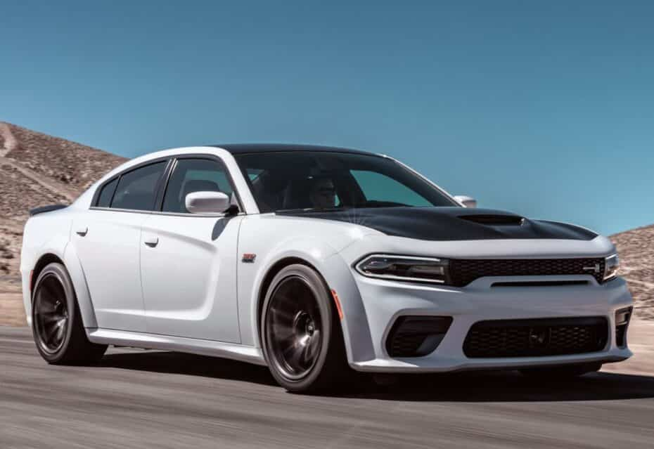

Ford Mustang Shelby GT500
El Ford Shelby es un automóvil deportivo muscle car y pony car variante del Ford Mustang, producido por el fabricante estadounidense Shelby de 1965 a 1968; y de 1969 a 1970 por Ford Motor Company.

El Ford Shelby es un automóvil deportivo muscle car y pony car variante del Ford Mustang, producido por el fabricante estadounidense Shelby de 1965 a 1968; y de 1969 a 1970 por Ford Motor Company.
El Dodge Charger es un modelo de automóvil comercializado por Dodge en varias formas durante siete generaciones desde 1966. El primer Charger fue un auto de exhibición en 1964. Un prototipo de Charger II de 1965 tenía un parecido notable con la versión de producción de 1966. El Charger se ha construido sobre tres plataformas diferentes en varios tamaños.
